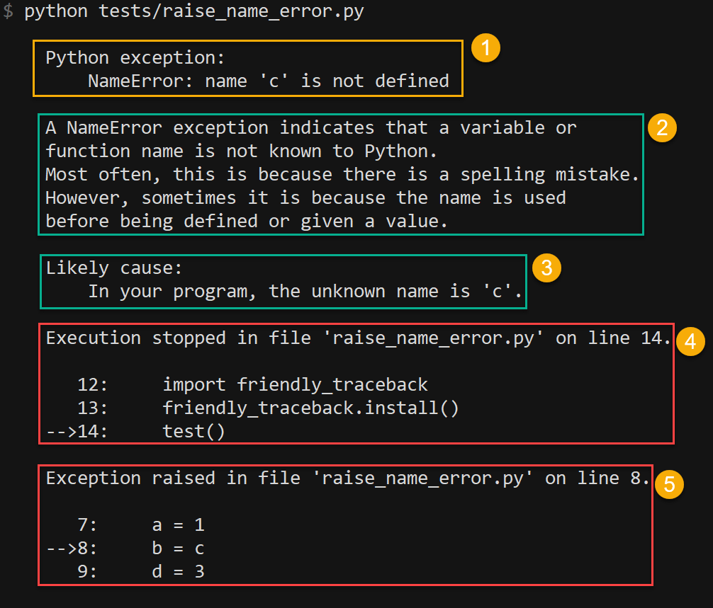
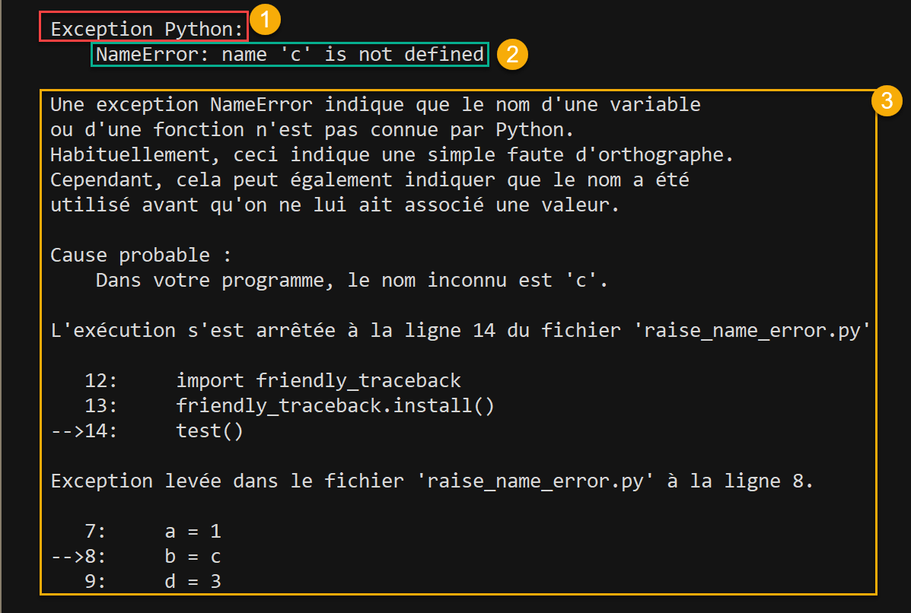
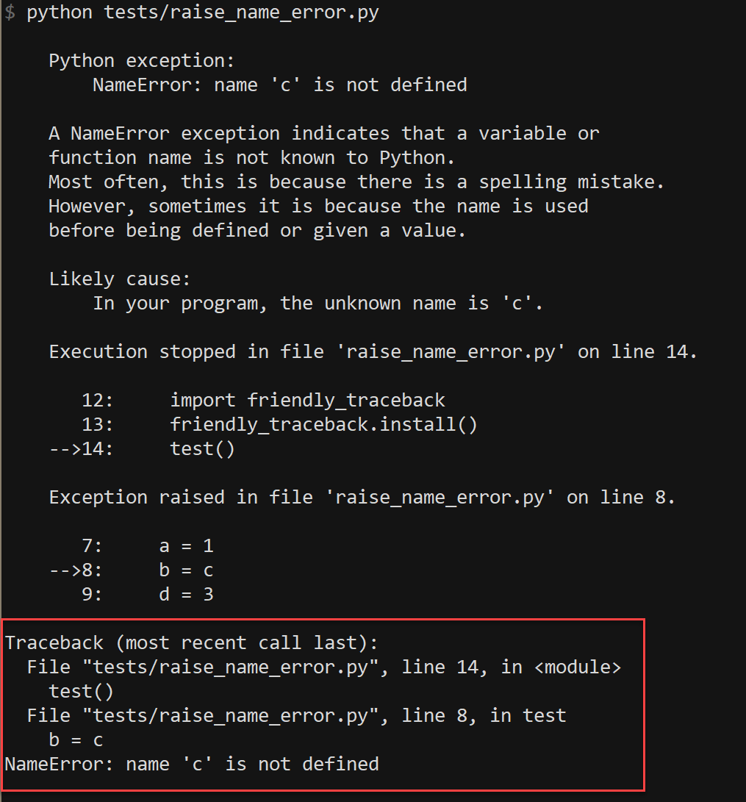

Some thoughts on the design of friendly-traceback¶
The following are thoughts on the design of this project. The content of this file will be changed as this project evolve. However, it is likely that experimentations with features will proceed faster and in slightly different ways than the content of this page would suggest.
Basic usage¶
There should be three ways of using friendly-traceback.
As an import hook:
import friendly_traceback friendly_traceback.install() # sys.excepthook = friendly_traceback.explain
Catching exceptions locally:
try: # Some code except Exception: friendly_traceback.explain(*sys.exc_info())
When launching a Python script (or the REPL):
python -m friendly_traceback myscript.py
By default, friendly tracebacks will be written to sys.stderr. However, it should be possible to override this choice.
Localization¶
It should be possible to translate almost all the text provided. Some exceptions and examples will be given below.
The determination of which language is used to provide translations
is normally determined by using Python’s locale.getdefaultlocale().
However, it can be over-ridden in the following way, in order
of precedence:
- Using
friendly_traceback.set_lang(lang) - Using the environment variable
os.environ['FriendlyTracebackLang'] - Using variables found in a
.friendly_traceback.inifile
The information provided by locale.getdefaultlocale() includes
not only a language code, but information about a specific region as well.
For example, on my computer, this is fr_CA. As far as I can tell,
gettext does not have a graceful fallback from the specific (“fr_CA”)
to the generic (“fr”); it does have the option of having a fallback
to the version hard-coded in a program.
What we have done is including the possibility
of loading a specific translation with no fallback. If an exception is
raised, we then reduce the length of the language code to the first two
characters, and attempt to load the translation while using
gettext’s option of falling back to the hard-coded version if needed.
Verbosity¶
There should be different levels of verbosity.
1. Basic¶
A basic level would include five parts:
- A single line, introduced by “Python Exception:”, or its equivalent in some other language, and showing the untranslated information from Python.
- A section explaining what is normally meant by that Exception
- A section explaining the likely cause of the error. For the English version, other than for SyntaxError, it often will be just rephrasing the standard Python message.
- and 5. Unlike normal Python tracebacks, which shows the entire calling history, we only show where the program stopped, and where the exception was generated.
For example, in English:
{kind=link}
The corresponding French version, where the highlighted blocks 1 and 3 are translated, and the block 2 is the same as that given by Python in English.
{kind=link}
2. Intermediate¶
In addition to the basic version, an intermediate version might also include some additional information about known local and global variables and their values, similar to what is provided by https://github.com/albertz/py_better_exchook
3. Advanced¶
In addition to what would be provided by the intermediate version, the advanced version would have the normal Python traceback appended at the end.
{kind=link}
In the example given above, it is easy to see the relation between the standard Python traceback and the additional information we provide. In more general situations, the Python traceback will be much longer, and likely much more confusing to beginners. Still, by giving the option of including it, we believe it might ease the learning curve for students.
Setting the verbosity level¶
This could be done when using friendly_traceback explicitly in the
program, as an option in the calling function.
If no such option is provided, then it should be set either from
the local environment variables (as for the language) or from a global
.ini file.
Extensibility¶
For projects that have their custom Exceptions, like AvantPy, it should be possible to add the custom exceptions to those handled by friendly-traceback. Perhaps with something like:
import friendly_traceback as friendly
from my_project import my_exceptions
friendly.extend(my_exceptions)
friendly.install()
About the likely cause¶
For some exceptions, such as NameError, it might be easy to find the original cause and report it in a way that is easy to understand as shown in the example above. However, that might not be the case for SyntaxError. These could normally be found by using pylint or flake8 before running the code. It should be possible to either use one of these packages to do this analysis when an error is found, or to develop a simplified version that focuses on Syntax Errors, and is designed from the start to provide localized (i.e. translated) information.
Additional configuration¶
It should be possible to add some colours to various parts of the traceback information; however, this should likely be done only
- if friendly_traceback is embedded in another application which has full control over its display (some terminal emulators might not support control characters required for colours - or do so in a way that might be counter productive)
- Based on values found in a
.inifile.
This additional feature should only be implemented after all other issues have been dealt with.
Other similar projects¶
Many other projects do some enhanced traceback formatting, however none that we know of aim at
- making tracebacks easier to understand by beginners
- translating traceback information.
Still, there is much to learn by looking at what others are doing. The following is an incomplete list of projects or modules to look at:
- https://docs.python.org/3/library/cgitb.html
- https://github.com/albertz/py_better_exchook/
- https://github.com/Infinidat/infi.traceback
- https://github.com/laurb9/rich-traceback
- http://www.wotevah.com/code/log.py
- https://github.com/ipython/ipython/blob/master/IPython/core/ultratb.py
- https://github.com/patrys/great-justice
- https://github.com/Qix-/better-exceptions